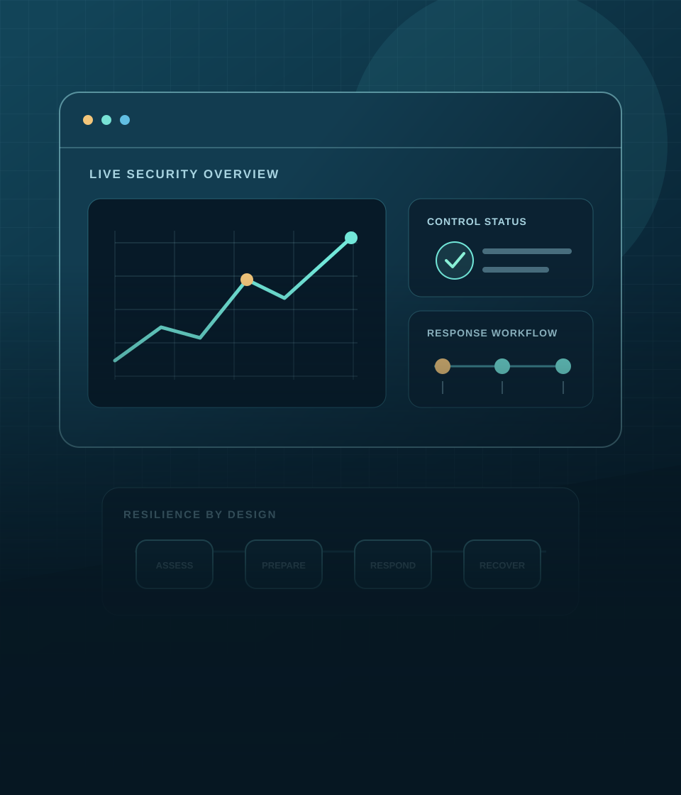
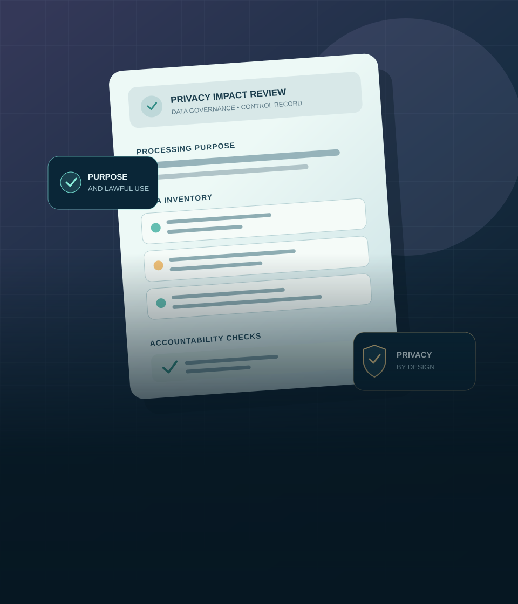

Cyber Security
Research, preparedness and capacity building for secure, resilient and cyber-ready institutions.
Explore cybersecurityCNLU Patna × GIGA Innovations Technologies
Advancing techno-legal research, compliance frameworks and secure digital governance for a resilient digital India.
The Unit’s activities and institutional arrangements are subject to approval, available expertise, applicable agreements and authorisations.
CNLU × GIGA
The CNLU–GIGA Cyber Security and Data Protection Compliance Research Unit (CS-DPCRU) brings together legal scholarship, cybersecurity expertise, technology innovation and regulatory compliance.
Learn about the Unit
Research, preparedness and capacity building for secure, resilient and cyber-ready institutions.
Explore cybersecurity
Translate data protection law into organisational governance, compliance practices and safeguards.
Explore data protection
Research legal, technological and institutional dimensions of data governance and digital trust.
Explore data trust